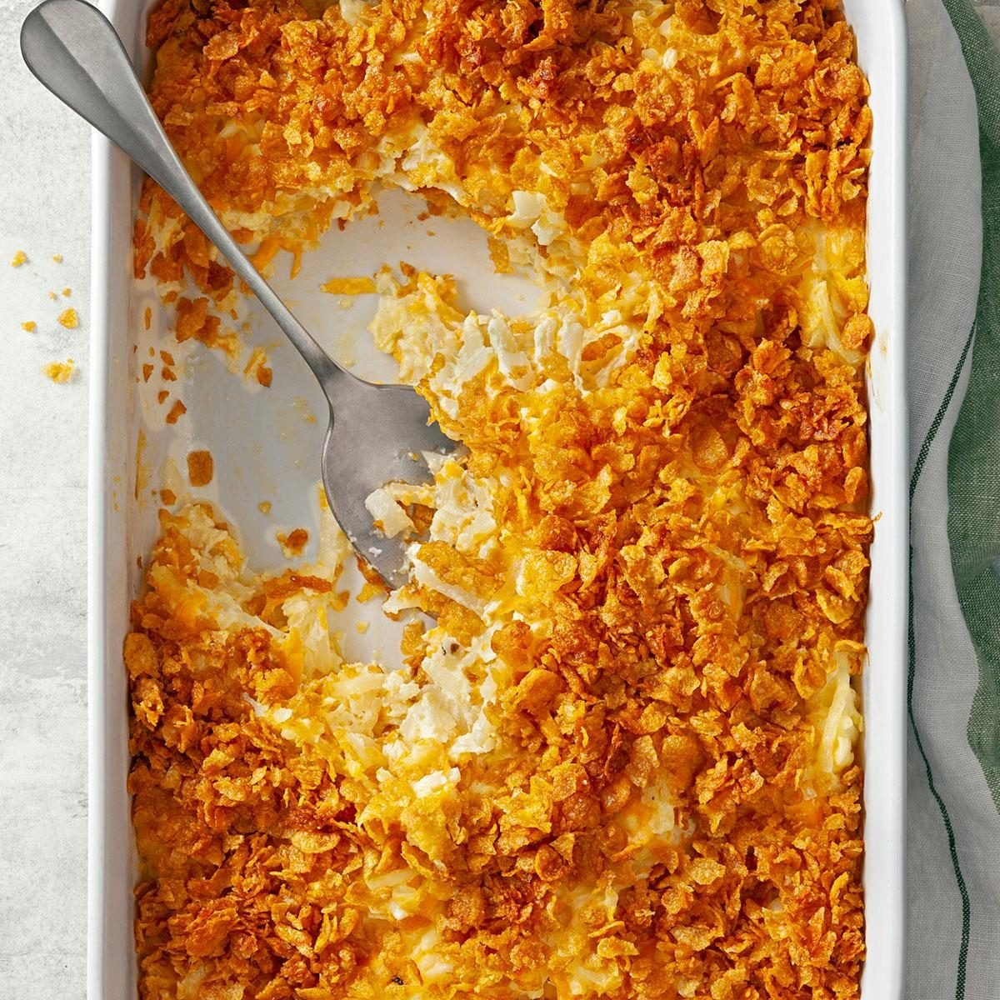

Funeral Potatoes
Home

Ingredients
- 1 bag Frozen Hashbrowns (thawed)
- 1 bag Shredded Vegan Cheddar Cheese
- 1 1/3 c Vegan Cream of Mushroom Soup
- 1 container Vegan Sour Cream
- 2 c Cornflakes
- 1/4 c Vegan Butter (melted)
Steps
- Combine hashbrowns, cheese, soup, and sour cream in a
9x16 casserole dish. Mix thoroughly.
- Mix together cornflakes and butter. Put into a ziploc and crush
if desired.
- Spread an even layer of the cornflake mixture across the top of the
potatoes in the casserole dish.
- Bake at 350 for 40-50 minutes.